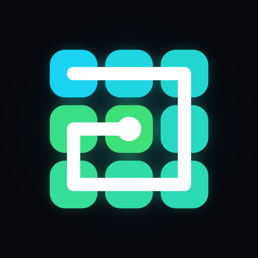

One Line Fill
Draw one line, fill every tile · Một nét vẽ, kín mọi ô
Get it on Google PlayA calm one-line puzzle
Start on the glowing tile and swipe through each tile exactly once. Bigger grids, holes and fixed end tiles turn every stroke into a logic puzzle.
- Every level is built from a real solution, so it can always be solved
- Five endless packs, from Easy to Master
- Unlimited undo, hints that work offline
- A daily puzzle with streaks, streak gifts and an evening reminder, best times, line colors to unlock
- Plays offline, no account
One Line Fill – game vẽ một nét
Bắt đầu ở ô phát sáng, vuốt qua mỗi ô đúng một lần cho đến khi tô kín cả bàn. Game trí tuệ nhẹ nhàng, khó dần.
- Màn nào cũng được tạo từ một lời giải có thật nên luôn giải được
- Năm gói không giới hạn màn, từ Dễ tới Bậc thầy
- Hoàn tác không giới hạn, gợi ý không cần mạng
- Thử thách mỗi ngày, kỷ lục thời gian, màu nét để mở khoá
- Chơi không cần mạng, không cần tài khoản
Linien-Rätsel: eine Linie, jedes Feld
Starte auf dem leuchtenden Feld und wische genau einmal durch jedes Feld. Ein ruhiges Denkspiel, das langsam schwerer wird.
- Jedes Level ist immer lösbar
- Fünf endlose Pakete, von Leicht bis Meister
- Unbegrenztes Rückgängig, Tipps auch offline
- Tagesrätsel, Bestzeiten, Linienfarben zum Freischalten
Un seul trait pour remplir chaque case
Pars de la case lumineuse et passe une seule fois sur chaque case. Un casse-tête zen qui devient peu à peu plus difficile.
- Chaque niveau a toujours une solution
- Cinq packs sans fin, de Facile à Maître
- Annulation illimitée, indices hors ligne
- Défi du jour, meilleurs temps, couleurs à débloquer
Un solo trazo por todas las casillas
Empieza en la casilla brillante y pasa por cada casilla una sola vez. Un puzle de lógica tranquilo que se va complicando.
- Todos los niveles tienen solución
- Cinco paquetes infinitos, de Fácil a Maestro
- Deshacer sin límite, pistas sin internet
- Reto diario, mejores tiempos, colores por desbloquear
Un solo tratto per ogni casella
Parti dalla casella luminosa e passa su ogni casella una sola volta. Un rompicapo rilassante che diventa sempre più difficile.
- Ogni livello si può sempre risolvere
- Cinque pacchetti senza fine, da Facile a Maestro
- Annulla senza limiti, suggerimenti offline
- Sfida del giorno, tempi migliori, colori da sbloccare
Jedną linią przez każde pole
Zacznij od świecącego pola i przejdź przez każde pole dokładnie raz. Spokojna łamigłówka, która stopniowo staje się trudniejsza.
- Każdy poziom da się rozwiązać
- Pięć pakietów bez końca, od Łatwego do Mistrza
- Cofanie bez limitu, podpowiedzi offline
- Wyzwanie dnia, najlepsze czasy, kolory do odblokowania
Privacy Policy · Chính sách quyền riêng tư
Contact · Liên hệ: lehoang10112002@gmail.com